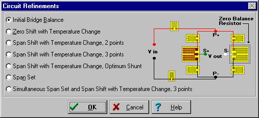
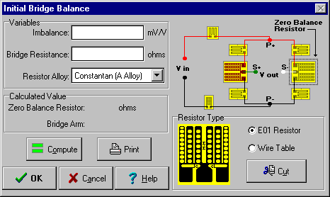

Step 5
Step 5Getting Started
Step 4
Circuit Refinements

Select the Initial Bridge Balance RADIO BUTTON and press the OK BUTTON to obtain the following Initial Bridge Balance DIALOG:

Enter the variables as follows:
| Imbalance: | -0.5 mV/V |
| Bridge Resistance: | 350 ohms |
| Resistor Alloy: | Constantan (A-Alloy) |
Press the Compute BUTTON. The calculated value should be:
| Zero Balance Resistor | 0.70 ohms |
| Bridge Arm | P+ to S- |
Select the resistor type by pressing the E01 Resistor RADIO BUTTON. Press the Cut BUTTON to obtain the E01 Adjustment Form DIALOG.